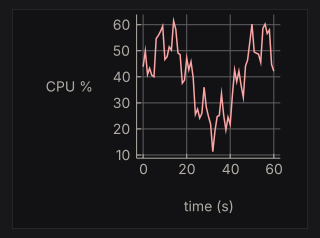
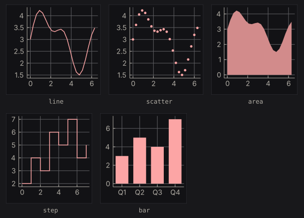
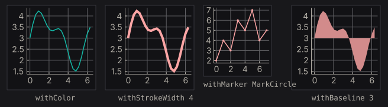
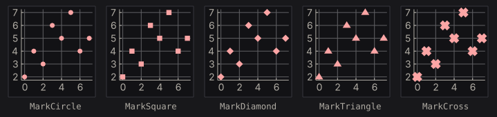
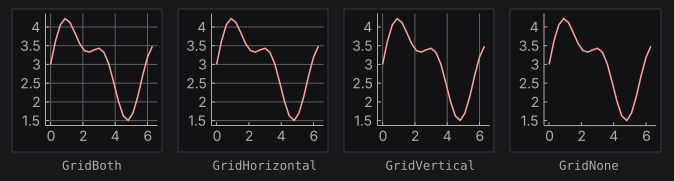
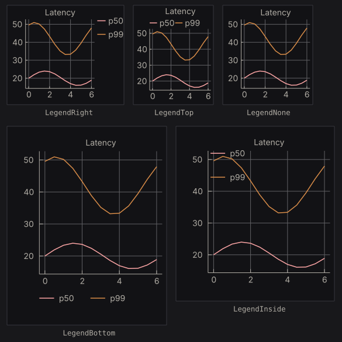
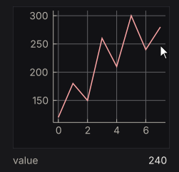
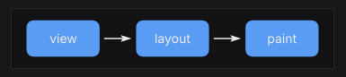

Ecosystem Packages
Each package adds a backend or one capability to nano-ui. Pin them from source as in the Quick Start.
| Package | What it adds |
|---|---|
nano-ui-sdl | SDL3 window backend, TrueType fonts, native file dialogs, custom chrome |
nano-ui-rgfw | RGFW + OpenGL 3.2 backend with a bundled bitmap font |
nano-ui-diagrams | Line/bar/scatter/area charts and diagrams-lib content |
nano-ui-form | Validated applicative forms built on ditto |
nano-ui-markdown | CommonMark rendering, appendable for streamed replies |
nano-ui-svg | DrawOp-to-SVG and whole-frame SVG export |
Backends
nano-ui-sdl is the primary desktop backend:
sdlMain :: IO ()
sdlMain = Sdl.runSdlApp
Sdl.defaultSdlOptions
{ Sdl.sdlWindowSettings = defaultWindowSettings {wsTitle = "My App", wsSize = Size 1024 768}
, Sdl.sdlAppFont = Sdl.FontSearch ["Segoe UI", "SF Pro Text", "Inter"]
, Sdl.sdlAppFontSize = 14
, Sdl.sdlAppTheme = Just defaultTheme
}
appView
It adds HarfBuzz shaping, installed-font lookup, high-DPI handling, non-blocking native file dialogs (useFileDialog), custom title bars (windowCaption), and screenshots (saveScreenshot, captureScreenshot). See Desktop Windows for the window side.
nano-ui-rgfw is the zero-system-dependency alternative:
rgfwMain :: IO ()
rgfwMain = Rgfw.runRgfwApp Rgfw.defaultRgfwOptions appView
It links RGFW statically and bundles a bitmap font, so binaries are small and standalone. Use it where SDL3 is not available.
Charts and diagrams
nano-ui-diagrams provides NanoUI.Plot and the diagrams-lib widget. import NanoUI.Diagrams brings in both. A chart is a plain Chart value; plot draws it, sized by a layout modifier:
cpuChart :: PlotCache -> [(Double, Double)] -> NanoUI ()
cpuChart cache samples =
void $ plot cache (fillW . fixedH 220) $
withGrid GridBoth
. withXAxis "time (s)"
. withYAxis "CPU %"
. withLegend LegendNone
$ chart [line "cpu" samples]

Allocate the PlotCache once in IO with newPlotCache and keep it in the application record. It rebuilds a chart’s drawing only when the chart or the theme changes, so building the Chart value every frame is cheap.
A chart keeps its drawing’s proportions. With fillW the frame fills the width and the chart is centred in it; with only fixedH the widget takes the width the proportions give. A chart whose labels would overlap at the requested size is drawn larger, up to twice the size.
The examples below are compiled from ChartExamples.hs, which nano-ui-svg-glossary also renders to the images. They share this data:
wave :: [(Double, Double)]
wave = [(x, 3 + sin x + 0.5 * sin (2.3 * x)) | x <- [0, 0.3 .. 2 * pi]]
counts :: [(Double, Double)]
counts = zip [0 ..] [2, 4, 3, 6, 5, 7, 4, 5]
quarters :: [(Text, Double)]
quarters = [("Q1", 3), ("Q2", 5), ("Q3", 4), ("Q4", 7)]
Series
Series constructors take a name and the points: (x, y) pairs, or (label, value) pairs for bar. Each cell below plots withLegend LegendNone (chart [s]).

seriesKinds :: [(Text, Series)]
seriesKinds =
[ ("line", line "line" wave)
, ("scatter", scatter "scatter" wave)
, ("area", area "area" wave)
, ("step", step "step" counts)
, ("bar", bar "bar" quarters)
]
Lines and steps join the points in the order given, so sort them first if they are not already in x order. An area fills down to zero. Bars sit in category order, each taking 72% of its slot. lineChart, barChart, scatterChart, and areaChart are one-series shortcuts that plot a list with a grid and no legend.
Series without a colour take the theme’s series colours in order. The modifiers override the colour and size:

seriesStyles :: [(Text, Series)]
seriesStyles =
[ ("withColor", withColor (colorRGB 20 184 166) (line "s" wave))
, ("withStrokeWidth 4", withStrokeWidth 4 (line "s" wave))
, ("withMarker MarkCircle", withMarker MarkCircle (line "s" counts))
, ("withBaseline 3", withBaseline 3 (area "s" wave))
]
withStrokeWidth means the line width for a line or step, the marker size for a scatter, and the slot fraction for a bar. withBaseline sets where an area fills to, in data units, so values below it fill downward. A line’s markers are twice its stroke width; a scatter’s markers are its stroke width, 3 by default:

markers :: [(Text, Series)]
markers =
[ (name, withStrokeWidth 6 (withMarker shape (scatter name counts)))
| (name, shape) <-
[ ("MarkCircle", MarkCircle)
, ("MarkSquare", MarkSquare)
, ("MarkDiamond", MarkDiamond)
, ("MarkTriangle", MarkTriangle)
, ("MarkCross", MarkCross)
]
]
Grid, titles, and legend
withGrid picks the grid lines drawn through the data box. Ticks and their labels stay either way.

grids :: [(Text, Chart)]
grids =
[ (name, withGrid mode . withLegend LegendNone $ chart [line "s" wave])
| (name, mode) <-
[("GridBoth", GridBoth), ("GridHorizontal", GridHorizontal), ("GridVertical", GridVertical), ("GridNone", GridNone)]
]
withTitle, withXAxis, and withYAxis add titles. withLegend places the legend, which is on the right by default. At this height the bottom and inside legends would overlap other labels, so those two charts are drawn larger.

latency :: Chart
latency =
withTitle "Latency" $
chart [line "p50" [(x, 20 + 4 * sin x) | x <- [0, 0.5 .. 6]], line "p99" [(x, 42 + 9 * sin (x + 1)) | x <- [0, 0.5 .. 6]]]
legends :: [(Text, Chart)]
legends =
[ (name, withLegend pos latency)
| (name, pos) <-
[ ("LegendRight", LegendRight)
, ("LegendTop", LegendTop)
, ("LegendNone", LegendNone)
, ("LegendBottom", LegendBottom)
, ("LegendInside", LegendInside)
]
]
Hover
plot returns a PlotResponse. Its plotHover is the point nearest the pointer, in data units, while the pointer is inside the data box:
requests :: [(Double, Double)]
requests = zip [0 ..] [120, 180, 150, 260, 210, 300, 240, 280]
hoverReadout :: PlotCache -> NanoUI ()
hoverReadout cache = columnWith (gap 8) $ do
resp <- plot cache (fixedWH 240 200) (withLegend LegendNone (chart [line "requests" requests]))
case plotHover resp of
Nothing -> muted "Hover a point"
Just h -> kv "value" (T.pack (show (round (hoverDataY h) :: Int)))

The pointer rests by the seventh point, so the readout shows its 240. hoverSeriesIdx and hoverPointIdx say which series and point it is. Wrap the chart in withCursorShape UiCursorCrosshair to give the pointer a crosshair.
Diagrams
diagram places any diagrams-lib Diagram B in the layout, framed like a chart and scaled to fit the layout modifier with its proportions kept. Colour it from the theme with colourOf, or take the chart colours from uiPlotStyle:
-- | Three labelled boxes joined by arrows, coloured from the theme.
stages :: Theme -> Diagram B
stages t = (mconcat (zipWith stage [0 ..] ["view", "layout", "paint"]) <> arrows) # frame 0.25
where
ink = colourOf (styleFg (themePanel t))
stage i name =
(text name # fontSizeL 0.3 # fc ink <> roundedRect 1.6 0.8 0.15 # fc (colourOf (themeAccent t)) # lw none)
# translate (D.r2 (2.4 * i, 0))
arrows =
mconcat
[ arrowBetween' (with & headLength .~ local 0.2) (p2 (2.4 * i + 0.9, 0)) (p2 (2.4 * i + 1.5, 0)) # lc ink # lwO 1.5
| i <- [0, 1]
]
pipelineDiagram :: NanoUI ()
pipelineDiagram = void $ diagram (fixedWH 360 72) . stages =<< uiTheme

Text in a diagram is measured with the current font so labels fit. The drawing is cached per theme and size, not per content: for a diagram that changes, use diagramWithKeyAndEnvelope with a key that changes with it. The live chart tutorial feeds a chart from a Stream: Live Data & Background Work.
Validated forms
nano-ui-form builds applicative forms on ditto. A Form Text a has Text errors and returns a:
data Signup = Signup Text Text
signup :: Form Text Signup
signup =
Signup
<$> withFieldErrors (inputText "Name" "" `prove` notEmpty "Name is required")
<*> withFieldErrors (inputText "Email" "" `prove` validEmail (const "Not an email address"))
Allocate owner <- newFormState once, then run it with a stable prefix:
signupView :: FormState -> NanoUI ()
signupView owner = do -- owner <- newFormState in setup
submitted <- nanoFormSubmit owner "signup" "Sign up" signup
case submitted of
Just (Signup name _) -> label ("Welcome, " <> name)
Nothing -> pure ()
nanoFormLive returns Just a whenever the form is valid; nanoFormEx takes a FormConfig; runNanoForm returns the view and result separately. Inputs include inputText, inputPassword, inputTextArea, inputCheckbox, inputSlider, inputSelect, inputRadio, and inputColor. Validation includes notEmpty, minLength, maxLength, inRange, validEmail, matches, and customProof. inputWidget adapts any Var a -> NanoUI Response widget, with a publication policy (OnChange, OnChangeOr, OnlyWhen).
Markdown
nano-ui-markdown parses with commonmark and draws with rich text:
doc :: MarkdownDoc
doc = parseMarkdown "# Hello\n\nSome *emphasis* and `code`."
view :: MarkdownCache -> NanoUI ()
view cache = do -- cache <- newMarkdownCache in setup
clicked <- markdown cache doc
for_ clicked $ \url -> liftIO (void (Sdl.openUrl url))
Allocate cache <- newMarkdownCache once. markdown returns the link clicked this frame. For streaming, append without reparsing the whole document:
reply :: Stream Int MarkdownDoc -> MarkdownCache -> Int -> NanoUI ()
reply stream cache replyId = do
answer <- useStream stream replyId emptyMarkdown $ \update ->
onToken (\token -> update (appendMarkdown token))
void (markdown cache answer)
When appending on the UI thread, append a frame’s tokens in one call. The parser reparses only the tail block, with a few documented exceptions (a long unsplittable final block, or a link-reference definition). MarkdownConfig.mdBlock overrides block drawing, for example to syntax-highlight code.
SVG export
nano-ui-svg has two levels:
NanoUI.Draw.SvgexportsDrawOpsequences:drawOpsToSvg bounds opsorrenderDrawOpsSvg config.NanoUI.Draw.FrameSvgre-renders a whole frame:frameToSvg config ctx input drawData.
exportViewToSvg :: NanoUI () -> IO Text
exportViewToSvg v = do
ctx <- newPixelContext
let inp = withInputOff 1280 800
enableSvgExport ctx
(_, drawData, _) <- runFrame ctx inp v
frameToSvg defaultFrameSvgConfig ctx inp drawData
enableSvgExport records the shapes paint draws and the text spans the exporter reads; frameToSvg fails on a context without it. Ids in the document take a prefix from its hash, so several SVGs can share a page. A newPixelContext measures text on a 16 px monospace grid; run the frames inside withSdl to measure in the real font. The specimens in this book are made this way.